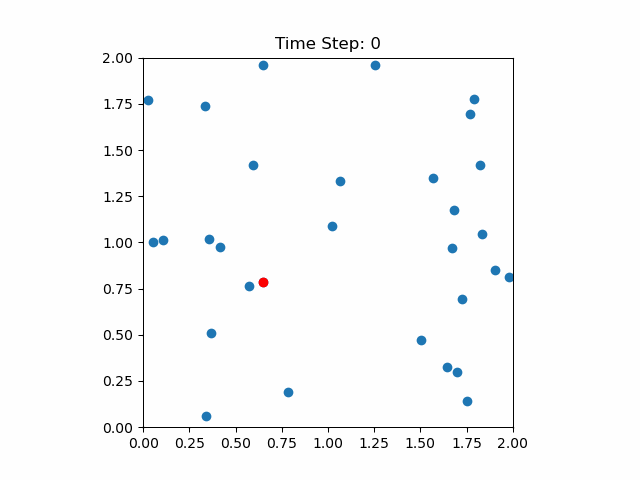

REPRESENITNG SYSTEMS IN ELECTRONIC AND ATOMISTIC SIMULATIONS
Contents
REPRESENITNG SYSTEMS IN ELECTRONIC AND ATOMISTIC SIMULATIONS#
In order to use electronic or atomistic simulations techniques we need a way to represnt the system we would like to study. In the case of molecules this task i trivial, we simply need to specify the positions of all atoms in the molecule (or nuclii in the case of an electronic simulation). When dealing with a materials with an almost ininite number of atoms this becomes untracktable. Here we make use of simulation cells and periodic boundary conditions.
Periodic Boundary Conditions (PBC)#
Periodic boundary conditions (PBCs) are a mathematical tool used to simulate an infinite system by using a finite simulation cell. This technique is widely used in many areas of physics and chemistry.
In PBCs, the edges of the simulation cell are identified with each other, meaning that when a particle exits the simulation cell on one edge, it reenters the cell from the opposite edge as shown in figure below:

Mathematically, this can be represented by the following equations:
where \(x_i\), \(y_i\), and \(z_i\) are the coordinates of particle \(i\) in the simulation cell, and \(L_x\), \(L_y\), and \(L_z\) are the lengths of the simulation cell in each direction. These equations state that a particle’s position plus the length of the simulation cell in a given direction is equivalent to its position in that direction.
PBCs are particularly useful when studying systems that exhibit periodicity, such as crystals or periodic arrays of particles. By using PBCs, researchers can simulate a small part of the system and extrapolate its behavior to the entire system. However, PBCs do have limitations, such as the inability to accurately model surface effects and other non-periodic phenomena.
P2 P2
Supercells#
Supercells are a widely used concept in materials modeling, particularly in computational solid-state physics and chemistry. A supercell is an artificial unit cell that contains multiple copies of the original unit cell, allowing for the simulation of larger systems and more complex structures. The supercell can be constructed by replicating the original unit cell along one or more of its lattice vectors, resulting in a larger cell with a new, larger lattice.
Suppose we have an original unit cell with lattice vectors \(\mathbf{a}_1\), \(\mathbf{a}_2\), and \(\mathbf{a}_3\), and let \(n_1\), \(n_2\), and \(n_3\) be the number of times the unit cell is replicated along each lattice vector. The resulting supercell will have lattice vectors \(\mathbf{A}_1=n_1\mathbf{a}_1\), \(\mathbf{A}_2=n_2\mathbf{a}_2\), and \(\mathbf{A}_3=n_3\mathbf{a}_3\), and will contain \(n=n_1n_2n_3\) replicas of the original unit cell.
Supercells are useful in materials modeling for several reasons. First, they allow for the simulation of larger systems, which can be important for understanding the behavior of materials under different conditions or for predicting the properties of materials that are difficult to synthesize or characterize experimentally. Second, they can be used to model defects or impurities in a crystal lattice, by introducing an additional atom or group of atoms into the supercell. Third, they can be used to study the effects of lattice vibrations or thermal fluctuations on the properties of materials.